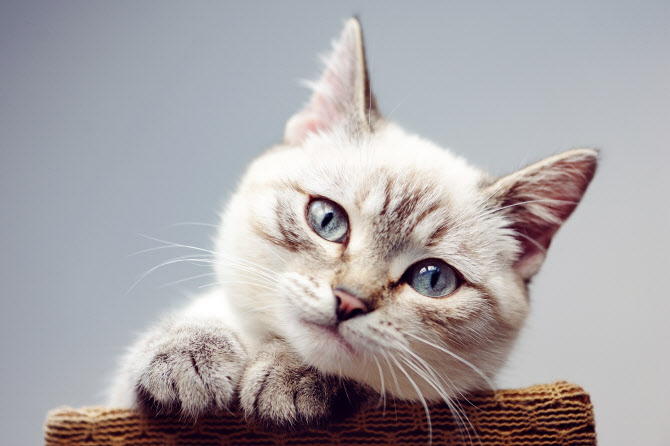
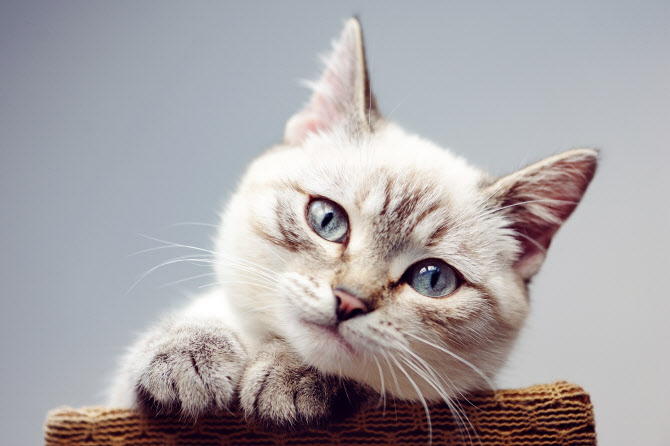

현생 고양이를 포함한 모든 고양이과 동물들이 공통 조상으로부터 약 2000만 년 전 분화한 이후, 들고양이는 10만~7만여 년 전부터 출현했으며, 가축화는 약 5만여 년전 이집트나 메소포타미아 등 중동 지역의 아프리카들고양이(Felis lybica)가 식량 확보 등의 이유로 도시 등 인간의 대규모 정착지에 나와 살던 것을 인간이 키우기 시작한 것이 오늘날 고양이의 유래다.
고양이는 매우 긴 수면 시간을 가지고 있어 하루 종일 자는 시간이 굉장히 많으나 기본적으로 야생에서는 포식자 동물이라는 특성 상 박명박모성(薄明薄暮性)으로, 해뜰녘과 해질녘에 주로 행동한다. 또한 여타 고양잇과 동물들과 같이 고양이는 육식동물로, 야생에 사는 들고양이는 쥐, 다람쥐, 작은 새 등을 사냥해 잡아먹는다. 한국에서는 사는 곳에 따라 들고양이, 길고양이, 집고양이 등으로 구분되어 불린다. 고양이는 19세기 후반 이후 인간에 의해 품종개량 되어 현재는 다양한 묘종이 있으며, 이러한 품종 등록을 관장하는 국제고양이협회(TICA)는 현재 71개 묘종을 인정한다.
| 네트워크 수행 점수 | 평균 | ||||||
| 1반 | 1차 | 17 | 17 | ||||
| 2차 | 17 | ||||||
| 2반 | 1차 | 16 | 17.5 | ||||
| 2차 | 19 | ||||||
| 3반 | 1차 | 20 | 19.25 | ||||
| 2차 | 18.5 | ||||||
| 4반 | 1차 | 20 | 20 | ||||
| 2차 | 20 | ||||||